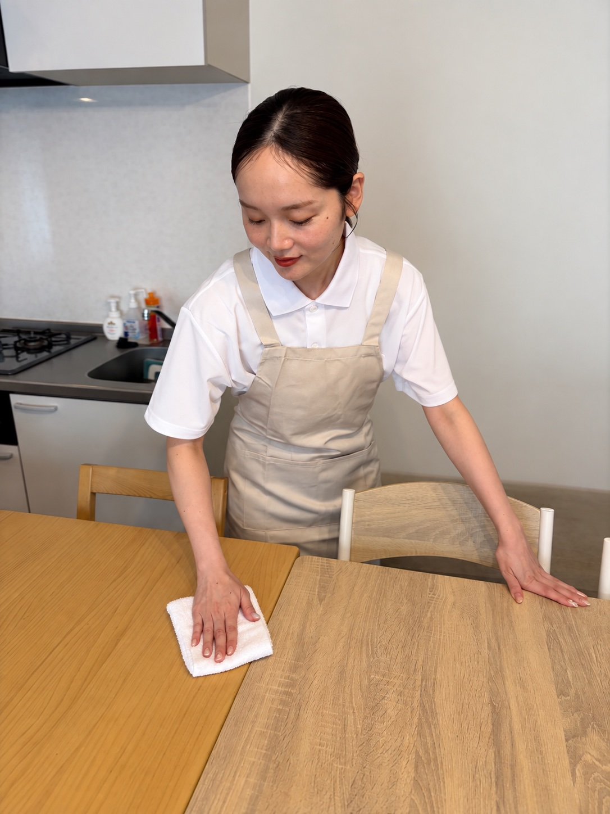
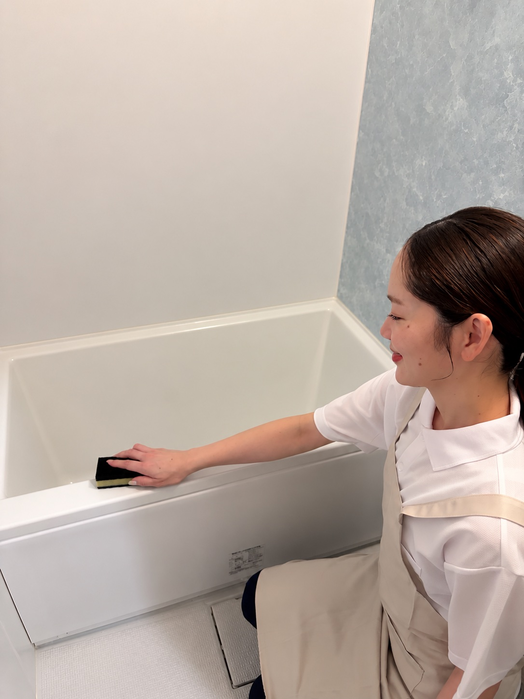
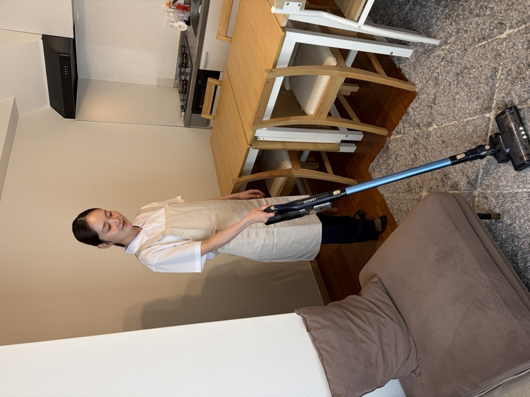
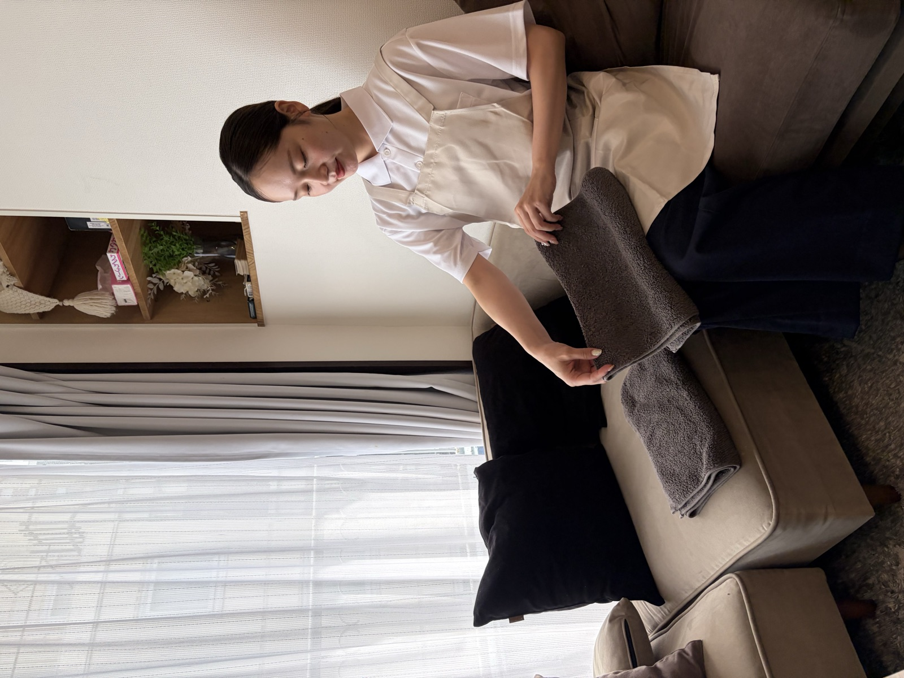

家事代行サービスの広告撮影をしてきました。
今回は、実際にスタッフさんが訪問しているような自然な雰囲気になるように、クライアント様と相談しながら衣装や撮影場所を決めていきました。
白のポロシャツにベージュのエプロンを合わせて、生活感のあるレンタルスペースで撮影。
お掃除をしているシーンなど、「実際にお願いしたらこんな感じかな」とイメージしてもらえるような写真を意識しています。
今回は「家事代行」というサービスを、写真だけでどう伝えたらいいかな？と考えながら撮影しました。
お掃除している様子はもちろん、見た方に「こんな方が来てくれたら安心できそう」と思ってもらえるように、表情や動きもできるだけ自然に。
企業HPや広告、SNS用の撮影など、
「こんな雰囲気で撮りたい」というところからでもお気軽にご相談ください。



